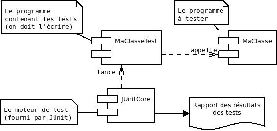

Tous les programmes réels contiennent des bugs (erreurs, défauts), parfois même beaucoup. C'est inacceptable :
On peut trouver différents types d’erreurs :
Pour produire un logiciel sans bug il faut
Il faut planifier les tests, c'est-à-dire se demander quoi tester en choisissant les cas intéressants / judicieux. Pour ça, il faut se baser sur les erreurs fréquentes et cela viendra avec l'expérience.
Nous avons besoin d’un plan reprenant les tests à effectuer
Il permet de s’assurer que l’on teste tous les cas pertinents.
On ne peut pas tester toutes les valeurs possibles
Par exemple : public static int max(int n1, int n2, int n3) ...
qui calcule la valeur maximale de trois nombres.
Que tester en plus du cas général ?
Par exemple : plan de tests de la méthode max :
# nombres résultat ce qui est testé
1 1, 3, 0 3 cas général
2 1, −3, −4 1 maximum au début
3 1, 3, 11 11 maximum à la fin
4 −1, −3, −4 −1 que des négatifs
JUnit : outil pour automatiser les tests unitaires :
La classe de test contient une méthode de test par cas. Cette méthode

Par exemple
@Test
public void max_cas1() {
int n1 = 1, n2 = 3, n3 = 0;
assertEquals ( 3, MaClasse.max(n1, n2, n3) );
}
@TeststaticassertEquals vérifie que les 2 valeurs sont identiques
assertTrue ( val ), assertFalse ( val ), . . .
Pour lancer le test, il suffit de compiler la classe de test puis de lancer la
commande :
java org.junit.runner.JUnitCore package.MaClasseTest.
Cette commande lance les tests et affiche un message récapitulatif du nombre de tests et du décompte de ceux qui ont réussi ou échoué.
Si cela ne fonctionne pas directement sur linux1
c'est que la JVM ne trouve pas la classe
org.junit.runner.JUnitCore
qui se trouve dans le fichier
jar/usr/share/java/junit4.jar.
Il faudra donc ajouter ce chemin
à votre CLASSPATH
et relancer un shell
afin que la variable d'environnement soit relue.
Certains d'entre vous ne voudront pas entrer cette longue commande lors de chaque lancement de tests. Rien ne les empêche de définir un alias avec la commande :
alias javatest='java org.junit.runner.JUnitCore'
et ils n'auront plus alors qu'à exécuter la commande
javatest package.MaClasseTest
pour lancer la classe de tests.